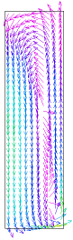

|
swirl |

  
|
|
swirl |
|
{ SWIRL.PDE
This problem addresses swirling flow in a cylindrical vessel driven by a bottom impeller.
In two-dimensional cylindrical coordinates, we can represent three velocity components (radial, axial and tangential) as long as there is no variation of cross-section or velocity in the azimuthal coordinate.
The Navier-Stokes equation for flow in an incompressible fluid with no body forces can be written in FlexPDE notation as dens*(dt(U) + dot(U,grad(u)) = -grad(p) + visc*del2(U) where U represents the vector fluid velocity, p is the pressure, dens is the density and visc is the viscosity of the fluid. Here the pressure can be considered as the deviation from static pressure, because uniform static forces like gravity can be cancelled out of the equation.
In two-dimensional steady-state axisymmetric form, this equation becomes three component equations, radial (vr), tangential (vt) and axial (vz): vr*dr(vr) - vr^2/r + vz*dz(vr) + dr(p) = visc*[div(grad(vr)) - vr/r^2] vr*dr(vt) + vr*vt/r + vz*dz(vt) = visc*[div(grad(vt)) - vt/r^2] vr*dr(vz) + vz*dz(vz) + dz(p) = visc*div(grad(vz)) |
 |
Notice that various strange terms arise, representing centrifugal and coriolis
forces in cylindrical coordinates and derivatives of the unit vectors in the
viscosity term. Notice also that there are no tangential derivatives, these
having been assumed zero.
In principle, these equations are supplemented by the equation of incompressible
mass conservation:
div(U) = 0
but this equation contains no reference to the pressure, which is nominally the
remaining variable to be determined.
In practice, we choose to solve a "slightly compressible" system by defining a
hypothetical equation of state
p(dens) = p0 + L*(dens-dens0)
where p0 and dens0 represent a reference density and pressure, and L is a large
number representing a strong response of pressure to changes of density. L is
chosen large enough to enforce the near-incompressibility of the fluid, yet not
so large as to erase the other terms of the equation in the finite precision
of the computer arithmetic.
The compressible form of the continuity equation is
dt(dens) + div(dens*U) = 0
which, together with the equation of state yields
dt(p) = -L*dens0*div(U)
In steady state, we can replace the dt(p) by -div(grad(p))
[see Help | Tech Notes | Smoothing Operators in PDEs"],
resulting in the final pressure equation:
div(grad(p)) = L*dens*div(U)
In a real stirring vessel, the fluid is driven by an impeller bar in the bottom
of the fluid. Since we cannot directly represent this geometry in an axisymmetric
model, we approximate the effect of the impeller by a body force on the fluid
in the lower segment of the domain. This body force attempts to accelerate the
fluid to the velocity of the stir bar, with an arbitrary partition of the
velocity into vr, vt and vz.
}
TITLE 'Swirling cylindrical flow'
COORDINATES
ycylinder ('r','z')
VARIABLES
vr(0.001) { radial velocity with minimum expected range }
vz(0.001) { axial velocity with minimum expected range }
vt (0.001){ tangential velocity with minimum expected range }
p(0.001) { pressure, with linear interpolation and minimum expected range }
DEFINITIONS
rad=0.01 { vial radius }
ht=0.035 { vial height }
dens=1000 { fluid density }
visc=0.001 { fluid viscosity }
vm=magnitude(vr,vz,vt)
div_v= 1/r*dr(r*vr)+dz(vz) { velocity divergence }
PENALTY = 1e4*visc/rad^2 { the phony equation of state coefficient }
band = ht/20 { height of force band }
bf = 1000 { arbitrary body-force scaling }
f { stirbar force - defined by region later }
rpm =staged(50,100,150) { several stirring speeds }
v0 = 2*pi*r*rpm/60 { impeller velocity }
vr0 = 0.2*V0 { arbitrary partition of stirring velocity }
vt0 = 1.0*V0
vz0 = 0.3*V0
mass_balance = div_v/integral(1)
INITIAL VALUES
vr=0
vz=0
vt=0
p=0
EQUATIONS
{ Radial Momentum equation }
vr: dens*(vr*dr(vr) - vt^2/r + vz*dz(vr)) + dr(p) - visc*(div(grad(vr))-vr/r^2)=F*(VR0-vr)
{ Axial Momentum equation }
vz: dens*(vr*dr(vz) + vz*dz(vz)) + dz(p) - visc*(div(grad(vz)))=F*(vz0-vz)
{ Tangential ("Swirling") Momentum equation (Corrected 2/2/06)}
vt: dens*(vr*dr(vt) + vr*vt/r + vz*dz(vt)) - visc*(div(grad(vt))-vt/r^2)=F*(vt0-vt)
{ Equation of state }
p: div(grad(p)) = penalty*div_v
BOUNDARIES
Region 'domain'
F=0
Start 'outer' (0,0)
{ mirror conditions on bottom boundary }
natural(vr)=0 natural(vt)=0 value(vz)=0 natural(p)=0 line to (rad,0)
{ no slip on sides (ie, velocity=0) }
value(vr)=0 value(vt)=0 value(vz)=0 natural(p)=0 line to (rad,ht)
{ zero pressure and no z-flow on top, but free vr and vt }
natural(vr)=0 natural(vt)=0 value(vz)=0 value(p)=0 line to (0,ht)
{ no radial or tangential velocity on spin axis }
value(vr)=0 value(vt)=0 natural(vz)=0 natural(p)=0 line to close
Region "impeller"
F=bf
Start(0,0) line to (0.9*rad,0) to (0.9*rad,band) to (0,band) to close
{ add a gridding feature to help resolve the shear layer at the wall }
Feature start(0.95*rad,0) line to (0.95*rad,ht)
MONITORS
contour(vr) as "Radial Velocity" report(rpm)
contour(vt) as "Swirling Velocity" report(rpm)
contour(vz) as "Axial Velocity" report(rpm)
elevation(vt,v0) from(0,0) to (rad,0) as "Impeller Velocity" report(rpm)
contour(p) as "Pressure"
vector(vr,vz) as "R-Z Flow"
PLOTS
contour(vr) as "Radial Velocity" report(rpm)
contour(vt) as "Swirling Velocity" report(rpm)
contour(vz) as "Axial Velocity" report(rpm)
contour(vm) as "Velocity Magnitude" report(rpm)
contour(p) as "Pressure" report(rpm)
vector(vr,vz) norm as "R-Z Flow" report(rpm)
contour(mass_balance) report(rpm)
elevation(vr) from (0,0) to (rad,0) as "Radial Velocity" report(rpm)
elevation(vt) from (0,0) to (rad,0) as "Swirling Velocity" report(rpm)
elevation(vz) from (0,0) to (rad,0) as "Axial Velocity" report(rpm)
elevation(vt,v0) from(0,0) to (rad,0) as "Impeller Velocity" report(rpm)
elevation(vm) from (0,0) to (rad,0) as "Velocity Magnitude" report(rpm)
elevation(vr) from (0,ht/2) to (rad,ht/2) as "Radial Velocity" report(rpm)
elevation(vt) from (0,ht/2) to (rad,ht/2) as "Swirling Velocity" report(rpm)
elevation(vz) from (0,ht/2) to (rad,ht/2) as "Axial Velocity" report(rpm)
elevation(vm) from (0,ht/2) to (rad,ht/2) as "Velocity Magnitude" report(rpm)
elevation(vr) from (0,0.9*ht) to (rad,0.9*ht) as "Radial Velocity" report(rpm)
elevation(vt) from (0,0.9*ht) to (rad,0.9*ht) as "Swirling Velocity" report(rpm)
elevation(vz) from (0,0.9*ht) to (rad,0.9*ht) as "Axial Velocity" report(rpm)
elevation(vm) from (0,0.9*ht) to (rad,0.9*ht) as "Velocity Magnitude" report(rpm)
elevation(vm) from (rad/2,0) to (rad/2,ht) as "Velocity Magnitude" report(rpm)
END